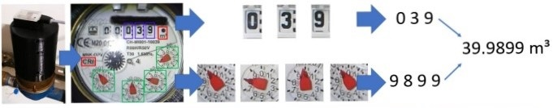
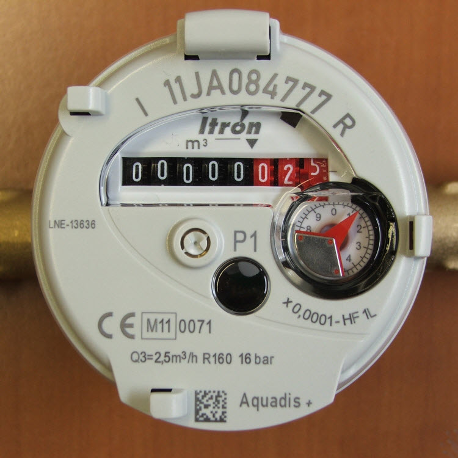

C'est la première fois que vous démarrez le numériseur après l'installation initiale. Vous avez été automatiquement redirigé vers la procédure de configuration initiale.
Ici, vous ajustez le réglage à votre compteur local en cinq étapes. À l'étape finale, la configuration initiale sera désactivée et elle redémarrera en mode normal.
Vous pouvez naviguer en avant et en arrière lors de la configuration avec les boutons "Suivant" et "Précédent". N'oubliez pas de sauvegarder à chaque étape.
This is an overview over the five steps:
Après l'étape 5, vous quittez le mode de configuration, redémarrez et démarrez en mode normal !